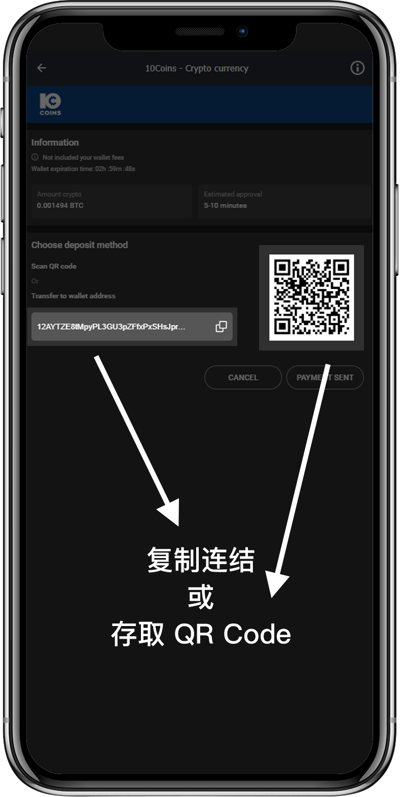
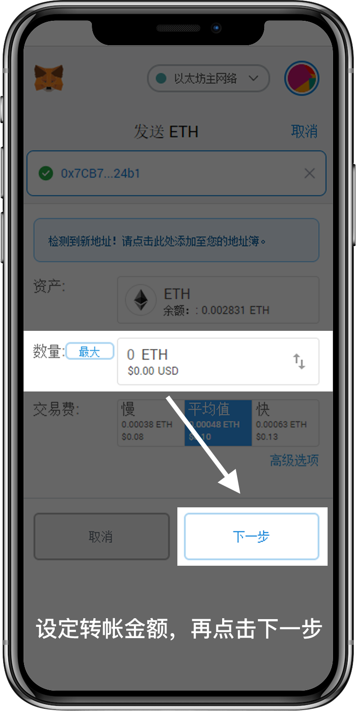
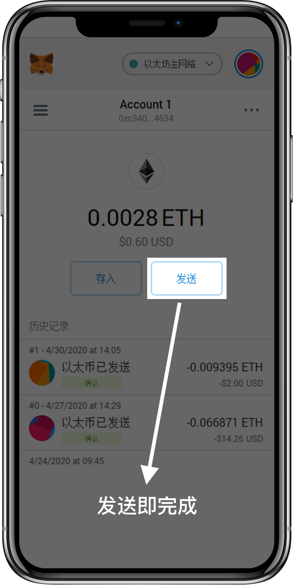

最安全的存款方式
可以通过去中心化交易方式，无需不受央行或银行管制，可随时随地使用数字钱包里的资金。 在10Bet十博平台存款提款时，只需透过数字钱包的加密地址，就能轻松完成交易。
-

USDT优势

最稳定币
以美元价值计算，不像比特币会上下反弹。同时拥有免费或较低的转账手续费。

安全保护
目前是最广泛使用的数字法定货币，平台建立在区块链技术上，提供了安全和透明性。

快速到账
24小时不间断运作，只需要确保到账数量和存款页显示数量一致，可以在短时间内到账。
USDT存款步骤
Step1

在存款页面选择USDT存款方式，并输入想要存款的人民币金额。
Step2

存款页面将提示所需支付的USDT数量来换取相对应的人民币金额，请在您的数字钱包扫描或复制加密地址进行转币。
请注意：整个存款过程需在支付有效时间内完成，否则将无法顺利到账。
Step3
打开您的数字钱包进行转币，下列示范huobi.me 和58coins的转币方式，您也可以选择市面上其他的数字钱包进行转币。
• Huobi.me的转币方式

在“资产”项目选择“提币”

- 选择USDT币种
- 务必使用ERC20协议。目前10Bet十博只接收ERC20协议的USDT
- 在“提币地址”复制存款页面所提供的加密地址，或使用QR Code扫描即可
- 请注意：交易“数量”是包含手续费，存款金额必须按照“到账数量”为准，否则将无法顺利到账
- 手续费：因不同数字钱包有不同的标准，请务必联系数字钱包客服了解详情
• 58coin的转币方式

在“资产”项目选择“提币”

- 选用“外部提币”，因收款数字钱包非来自同一个数字钱包平台
- 选择USDT币种
- 务必使用ERC20协议。目前10Bet十博只接收ERC20协议的USDT
- 在“提币地址”复制存款页面所提供的加密地址，或使用QR Code扫描即可
- 请注意：“提币数量”是包含手续费，存款金额必须按照“实际到账”为准，否则将无法顺利到账
- 手续费：因不同数字钱包有不同的标准，请务必联系数字钱包客服了解详情
Step4
确认数字钱包已经扣币成功，请回到10Bet十博平台查询存款到账情况。如果转币数量正确，您将会在5-10分钟收到款项，或是最多30分钟到账。 再三提醒：目前10Bet十博只接收ERC20协议的USDT，非ERC20协议的币将无法查获
-


什么是10Coins十通币？
10Coins十通币可以让您透过加密币进行存款，将您的比特币(BTC/BSV)，以太币(ETH)，莱特币(LTC)，柚子币(EOS)转换成10Coins 十通币进行存款。
加密币交易不受任何机构监督或影响，匿名交易也意味着安全性极高。在10Bet十博提款时，您也可以在没有使用加密币存款的前提下，把现金转直接透过10Coins十通币进行提款。
立即注册使用10Coins十通币的优点
交易便利
可通过比特币(BTC/BSV)，以太币(ETH)，莱特币(LTC)，柚子币(EOS)转换成十通币进行存款。
匿名安全
不受任何机构监督或影响，匿名交易也意味着安全性极高。也可把现金转直接透过十通币进行提款。

币种稳定
透明度高，没有任何个人或组织可以操控。只要在一个具备货币基础和经济稳定下，价值会保持不变。
10Coins十通币存款步骤
只需要透过简单的流程，就完成快速又安全的存款。
1. 进入十博10coin存款页

2. 开启支付工具
3. 设定金额
4. 进入转帐
10Coins十通币使用条款与规则
- 您将无法转换或兑换到其它钱包/币种。
- 您明白和认同10Bet十博不能被视为金融机构，因此您无法获得任何利息。
- 如果您的账户因任何原因重复付款、或重复处理了2次以上的提款要求，因此导致账户透支，您同意补偿10Bet十博任何透支的金额。
- 如果10Bet十博认定您采用“双重支付”的方法获益，所有未结算注单和盈利将被视为无效。如果当您赢了投注，却又在确认了区块链的存款后进行提款，您所赢得的投注将被即时没收，您的账户也将永久性被关闭。除此以外，我们将有权利关闭任何有相关联的账户。
- 任何加密货币通过十通币兑换时，您有可能被收取在区块链上确认交易的费用。这被视为矿工费，10Bet十博将不会退还。
- 最低存款额为100元人民币，您将通过加密货币的支付来换取人民币，并以人民币进行游戏和投注。系统不接受小于100元的存款。
- 提款时，我们首先需获得最少3个区块链确认您之前的存款。如果您的存款产生了矿工费用，有关的确认过程将需要好几个小时才能完成。
- 最低提款额为100元人民币。系统不接受小于100元的提款。
- 所选的支付方式不直接支持您的账户币种 CNY。 向支付供应商提交之前，我们会将输入的金额换成 USD。最高提款为1万美元。
- 10Bet十博保留权利要求您满足5倍的流水要求，尤其是当我们发现您使用我们的转账服务，做为实际障眼其它交易的方法。
- 作为线上交易进程的一部分，一般需要5分钟的处理时间，而这段时间的汇率应保持不变。如果交易在5分钟后处理，相对的汇率将有所变动，也就会产生多付或是少付的情况。此外，您必须输入您想兑换的金额到加密货币钱包，这段进程也可能会产生多付、或是少付的情况。
- 多付 – 当您支付大于所需完成交易的金额时，支付流程将保持不变，而10Bet十博将会按照所收到的实际金额办理入账。
- 少付 – 当您支付小于所需完成交易的金额时，10Bet十博将按照所收到的实际金额办理入账，而并非原先所申请的金额。如果金额小于最低存款（100元人民币），那么10Bet十博将保留权利不办理入账。
- 所有加密货币将由十通币进行处理。
- 所有加密货币转换至十通币的交易，均被视为最终的转换与交易，无法办理退款或其它用途；而所有情况将按照上述文本阐述。
专享优惠
十通币125%首存红利，最高1,110元
在开始，只要透过十通币进行首次存款至少100元(仅限娱乐场钱包)，并输入首存红利代码：10C125，即可享有100%首存红利，高达888元！首次存款金额达888，再送222元加码红利。
十通币125%首存红利，最高1,110元
在开始，只要透过十通币进行首次存款至少100元(仅限娱乐场钱包)，并输入首存红利代码：10C125，即可享有100%首存红利，高达888元！首次存款金额达888，再送222元加码红利。
十通币125%首存红利，最高1,110元
在开始，只要透过十通币进行首次存款至少100元(仅限娱乐场钱包)，并输入首存红利代码：10C125，即可享有100%首存红利，高达888元！首次存款金额达888，再送222元加码红利。